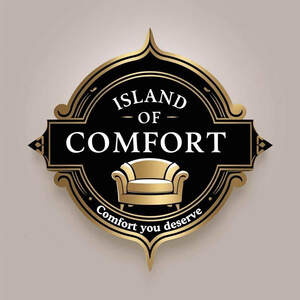

Trade Mark Journal No.2025/031 1 August 2025
UK00004236257 18 July 2025 (20)

- Class 20
- Sofa beds; Sofas; Bed chairs; Convertible sofas; Wall sofas; Reclining armchairs; Chair cushions; Couches; Extendible sofas; Armchairs; Chair beds; Cushions [furniture]; Recliners [furniture]; Divan beds; Bed mattresses; Lounge furniture; Recliners [chairs]; Air bed lounger; Reclining chairs; Upholstered convertible furniture; Bedroom furniture; Lounge chairs; Furniture for sitting; Beds, bedding, mattresses, pillows and cushions; Upholstered furniture; Cushions (upholstery); Cushions; Fitted bedroom furniture; Pouffes [furniture]; Nap mats [cushions or mattresses]; Furniture being convertible into beds; Living room furniture; Bedding for cots [other than bed linen]; Chaise lounges; Bed slats; Seating furniture; Seat cushions; Dining chairs; Futon mattresses [other than childbirth mattresses]; Lap desks being furniture; Chaise longue; Foldaway beds; Kitchen dressers [furniture]; Office armchairs; Leather furniture; Japanese floor cushions (zabuton); Soft furnishings [cushions]; Convertible chairs; Kitchen furniture; Patio furniture; Settees; Ottomans; Chaise longues; Bathroom furniture; Fitted kitchen furniture; Chairs; Bedding for nursery cots [other than bed linen]; Elastic straps (constituent parts of sofa seats); Pillows; Chairs being office furniture; Padded furniture; Slatted furniture; Drawers for furniture; Furniture incorporating beds; Bed frames; Folding chairs; Elastic straps [constitutive parts of sofa seats]; Bath pillows; Swivel chairs; Mobile stools [furniture]; Chair legs; U-shaped pillows; Bunk beds; Seats [furniture]; Shower chairs; Dressers [furniture]; Low armless fireside chairs; Desks [furniture]; Folding beds; Futons; Storage boxes for pillows [furniture]; Legs for furniture; Divans made of wicker; Cupboards being furniture; Cushions (Pet -); Rocking chairs; Height adjustable kitchen furniture; Beds incorporating divan bases; Furniture; Ergonomic chairs for seated massage.
Shaban Iqbal